CODING AGENTS AS PIXEL WORLD MODELS
traex/DeepSeek-V4.1-Flash · dynamic_spatial_relationship_0024
点击播放 · 原生 RGB 像素
逐轮保存的候选
回放视频、检查图与代码变化。
每份候选均可单独播放。实际图片检查记录在下方工具轨迹中。
候选 01播放与检查图
点击播放 · 原生 RGB 像素
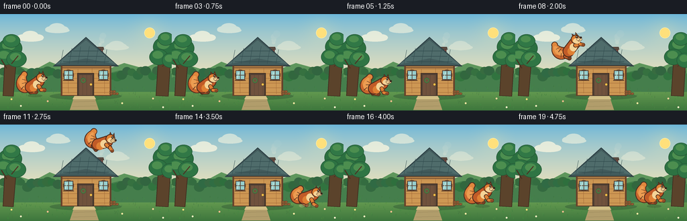
展开代码变化
--- 上一保存版本
+++ 本次保存版本
@@ -0,0 +1,458 @@
+from __future__ import annotations
+
+import math
+from pathlib import Path
+
+import numpy as np
+from PIL import Image, ImageDraw
+
+import artifact_io
+
+
+WIDTH = 256
+HEIGHT = 144
+FRAMES = 20
+FPS = 4
+SCALE = 4
+
+
+def pt(x: float, y: float) -> tuple[int, int]:
+ return round(x * SCALE), round(y * SCALE)
+
+
+def box(x0: float, y0: float, x1: float, y1: float) -> tuple[int, int, int, int]:
+ return round(x0 * SCALE), round(y0 * SCALE), round(x1 * SCALE), round(y1 * SCALE)
+
+
+def sc(value: float) -> int:
+ return max(1, round(value * SCALE))
+
+
+def polygon(draw: ImageDraw.ImageDraw, points, fill, outline=None, width=1):
+ draw.polygon([pt(x, y) for x, y in points], fill=fill, outline=outline, width=sc(width))
+
+
+def ellipse(draw, bounds, fill, outline=None, width=1):
+ draw.ellipse(box(*bounds), fill=fill, outline=outline, width=sc(width))
+
+
+def line(draw, points, fill, width=1):
+ draw.line([pt(x, y) for x, y in points], fill=fill, width=sc(width), joint="curve")
+
+
+def capsule(draw, a, b, fill, width, outline=None, outline_width=1):
+ if outline is not None:
+ draw.line([pt(*a), pt(*b)], fill=outline, width=sc(width + 2 * outline_width))
+ r = (width + 2 * outline_width) / 2
+ ellipse(draw, (a[0] - r, a[1] - r, a[0] + r, a[1] + r), outline)
+ ellipse(draw, (b[0] - r, b[1] - r, b[0] + r, b[1] + r), outline)
+ draw.line([pt(*a), pt(*b)], fill=fill, width=sc(width))
+ r = width / 2
+ ellipse(draw, (a[0] - r, a[1] - r, a[0] + r, a[1] + r), fill)
+ ellipse(draw, (b[0] - r, b[1] - r, b[0] + r, b[1] + r), fill)
+
+
+def cubic_bezier(control, t):
+ p0, p1, p2, p3 = control
+ u = 1.0 - t
+ return (
+ u**3 * p0[0] + 3 * u * u * t * p1[0] + 3 * u * t * t * p2[0] + t**3 * p3[0],
+ u**3 * p0[1] + 3 * u * u * t * p1[1] + 3 * u * t * t * p2[1] + t**3 * p3[1],
+ )
+
+
+def rotate_point(point, angle):
+ x, y = point
+ c, s = math.cos(angle), math.sin(angle)
+ return x * c - y * s, x * s + y * c
+
+
+def make_background(frame: int) -> Image.Image:
+ h = HEIGHT * SCALE
+ w = WIDTH * SCALE
+ y = np.linspace(0.0, 1.0, h, dtype=np.float32)[:, None]
+
+ top = np.array([104, 181, 218], dtype=np.float32)
+ horizon = np.array([245, 229, 185], dtype=np.float32)
+ sky_t = np.clip(y / 0.74, 0.0, 1.0) ** 0.72
+ sky = top[None, None, :] * (1.0 - sky_t[:, :, None]) + horizon[None, None, :] * sky_t[:, :, None]
+ rgb = np.repeat(sky, w, axis=1)
+
+ ground_t = np.clip((y - 0.73) / 0.27, 0.0, 1.0)
+ ground_top = np.array([113, 166, 86], dtype=np.float32)
+ ground_bottom = np.array([61, 118, 61], dtype=np.float32)
+ ground = ground_top[None, None, :] * (1.0 - ground_t[:, :, None]) + ground_bottom[None, None, :] * ground_t[:, :, None]
+ ground = np.repeat(ground, w, axis=1)
+ rgb = np.where((y >= 0.73)[:, :, None], ground, rgb)
+
+ xx = np.arange(w, dtype=np.float32)[None, :]
+ yy = np.arange(h, dtype=np.float32)[:, None]
+ sun_dist = np.sqrt((xx - 222 * SCALE) ** 2 + (yy - 27 * SCALE) ** 2)
+ glow = np.clip(1.0 - sun_dist / (43 * SCALE), 0.0, 1.0) ** 2 * 0.22
+ warm = np.array([255, 239, 170], dtype=np.float32)
+ rgb = rgb * (1.0 - glow[:, :, None]) + warm[None, None, :] * glow[:, :, None]
+
+ image = Image.fromarray(np.clip(rgb, 0, 255).astype(np.uint8)).convert("RGBA")
+ draw = ImageDraw.Draw(image)
+
+ # Sun and slow-moving clouds.
+ ellipse(draw, (215, 20, 231, 36), (255, 224, 123), (255, 238, 171), 0.8)
+ cloud_shift = frame * 0.18
+ for cx, cy, s, alpha in [
+ (44 + cloud_shift, 34, 1.0, 0.72),
+ (84 + cloud_shift * 0.7, 22, 0.72, 0.55),
+ (173 + cloud_shift * 0.45, 48, 0.55, 0.35),
+ ]:
+ layer = Image.new("RGBA", image.size, (0, 0, 0, 0))
+ ld = ImageDraw.Draw(layer)
+ fill = (255, 249, 225, round(255 * alpha))
+ for ox, oy, rx, ry in [
+ (-8, 1, 11, 5),
+ (1, -2, 12, 7),
+ (11, 1, 10, 5),
+ (2, 3, 18, 4),
+ ]:
+ ld.ellipse(box(cx + ox * s - rx, cy + oy * s - ry, cx + ox * s + rx, cy + oy * s + ry), fill)
+ image.alpha_composite(layer)
+ draw = ImageDraw.Draw(image)
+
+ # Layered distant hills and tree line.
+ polygon(draw, [(0, 87), (24, 76), (50, 84), (74, 71), (101, 82), (128, 72), (158, 83), (185, 73), (214, 81), (239, 70), (256, 78), (256, 111), (0, 111)], (94, 150, 92))
+ polygon(draw, [(0, 95), (20, 85), (42, 92), (67, 83), (92, 91), (121, 82), (151, 91), (178, 84), (205, 91), (234, 82), (256, 89), (256, 116), (0, 116)], (69, 126, 76))
+
+ # Distant tree crowns make the clearing feel enclosed without hiding the hut.
+ rng = np.random.default_rng(17)
+ for i in range(34):
+ x = 4 + i * 7.4 + rng.uniform(-2.2, 2.2)
+ crown_y = 91 + rng.uniform(-7, 3)
+ radius = rng.uniform(5.0, 8.4)
+ color = (46 + int(rng.integers(0, 11)), 101 + int(rng.integers(0, 17)), 61 + int(rng.integers(0, 9)))
+ ellipse(draw, (x - radius, crown_y - radius * 0.85, x + radius, crown_y + radius * 0.9), color)
+
+ # Meadow texture and small flowers.
+ for i in range(170):
+ x = float(rng.uniform(1, 255))
+ y = float(rng.uniform(107, 142))
+ length = float(rng.uniform(1.0, 3.4))
+ tone = (58 + int(rng.integers(0, 20)), 116 + int(rng.integers(0, 30)), 57 + int(rng.integers(0, 16)))
+ line(draw, [(x, y), (x + rng.uniform(-1.1, 1.1), y - length)], tone, 0.55)
+ for x, y, color in [
+ (17, 127, (250, 225, 125)),
+ (31, 137, (250, 240, 195)),
+ (71, 130, (245, 190, 144)),
+ (182, 133, (252, 234, 165)),
+ (228, 126, (247, 211, 156)),
+ (243, 139, (252, 241, 204)),
+ ]:
+ ellipse(draw, (x - 1.2, y - 1.2, x + 1.2, y + 1.2), color)
+
+ # Framing trees.
+ for side in ("left", "right"):
+ if side == "left":
+ trunk = [(4, 122), (7, 62), (17, 50), (25, 62), (20, 123)]
+ clusters = [(15, 51, 18, 15), (7, 64, 16, 12), (24, 67, 15, 12), (17, 40, 13, 10)]
+ else:
+ trunk = [(232, 122), (236, 59), (246, 47), (255, 59), (251, 123)]
+ clusters = [(245, 49, 17, 15), (236, 64, 14, 12), (253, 69, 12, 11), (247, 37, 12, 10)]
+ polygon(draw, trunk, (91, 67, 43), (65, 45, 31), 1.0)
+ line(draw, [(10, 81), (2, 68)], (75, 51, 34), 1.6)
+ line(draw, [(17, 74), (27, 62)], (75, 51, 34), 1.6)
+ line(draw, [(242, 78), (255, 66)], (75, 51, 34), 1.6)
+ for i, (x, y, rx, ry) in enumerate(clusters):
+ sway = math.sin(frame * 0.35 + i) * 0.45
+ ellipse(draw, (x - rx + sway, y - ry, x + rx + sway, y + ry), (43 + i * 2, 111 + i * 3, 64 + i * 2), (35, 87, 53), 0.7)
+ ellipse(draw, (x - rx * 0.65 + sway, y - ry * 0.75, x + rx * 0.45 + sway, y + ry * 0.2), (76, 142, 79))
+
+ return image
+
+
+def draw_hut(image: Image.Image, frame: int):
+ draw = ImageDraw.Draw(image)
+
+ # Ground shadow and a small path.
+ layer = Image.new("RGBA", image.size, (0, 0, 0, 0))
+ ld = ImageDraw.Draw(layer)
+ ld.ellipse(box(74, 117, 181, 128), (34, 70, 45, 90))
+ image.alpha_composite(layer)
+ draw = ImageDraw.Draw(image)
+
+ polygon(draw, [(111, 122), (140, 122), (147, 143), (104, 143)], (177, 157, 107))
+ polygon(draw, [(111, 122), (140, 122), (143, 127), (108, 127)], (211, 192, 135))
+ for i, y in enumerate((131, 138)):
+ x0 = 110 - i * 2
+ x1 = 141 + i * 2
+ line(draw, [(x0, y), (x1, y - 1)], (155, 137, 92), 0.7)
+
+ # Chimney and animated smoke.
+ polygon(draw, [(143, 51), (153, 51), (154, 72), (145, 72)], (130, 79, 70), (83, 53, 45), 1.0)
+ polygon(draw, [(142, 49), (154, 49), (155, 53), (143, 53)], (91, 77, 66), (71, 51, 44), 0.7)
+ smoke_layer = Image.new("RGBA", image.size, (0, 0, 0, 0))
+ sd = ImageDraw.Draw(smoke_layer)
+ for i in range(4):
+ age = (frame * 0.9 + i * 4.2) % 17
+ x = 149 + age * 0.42 + math.sin(age * 0.45) * 1.6
+ y = 45 - age
+ radius = 2.2 + age * 0.20
+ alpha = max(0, round(72 - age * 3.6))
+ sd.ellipse(box(x - radius, y - radius, x + radius, y + radius), (235, 235, 218, alpha))
+ image.alpha_composite(smoke_layer)
+ draw = ImageDraw.Draw(image)
+
+ # Roof.
+ polygon(draw, [(79, 78), (128, 34), (177, 78)], (66, 91, 92), (46, 65, 70), 1.6)
+ polygon(draw, [(83, 75), (128, 39), (173, 75), (128, 66)], (79, 108, 107))
+ line(draw, [(80, 77), (176, 77)], (51, 68, 70), 2.0)
+ for y, inset in ((55, 26), (63, 17), (71, 8)):
+ half = (y - 34) * 0.92
+ line(draw, [(128 - half, y), (128 + half, y)], (49, 75, 78), 0.7)
+ for x in range(94, 164, 13):
+ line(draw, [(x, 47 + abs(x - 128) * 0.19), (x - 4, 74)], (49, 75, 78), 0.55)
+
+ # Timber wall.
+ polygon(draw, [(91, 77), (165, 77), (165, 122), (91, 122)], (205, 151, 83), (96, 65, 43), 1.3)
+ for y in range(82, 121, 7):
+ line(draw, [(93, y), (163, y)], (172, 117, 62), 0.65)
+ for x, y0, y1 in [(101, 80, 118), (116, 82, 116), (137, 81, 117), (155, 80, 119)]:
+ line(draw, [(x, y0), (x + 0.8, y1)], (161, 106, 57), 0.55)
+ for x in (91.5, 164.5):
+ line(draw, [(x, 77), (x, 122)], (103, 66, 42), 2.4)
+ line(draw, [(91, 80), (165, 80)], (104, 67, 43), 1.3)
+
+ # Windows.
+ for x0 in (95, 147):
+ ellipse(draw, (x0 - 1, 83, x0 + 15, 99), (91, 61, 42))
+ polygon(draw, [(x0, 84), (x0 + 14, 84), (x0 + 14, 98), (x0, 98)], (151, 207, 206), (75, 54, 43), 1.1)
+ line(draw, [(x0 + 7, 84), (x0 + 7, 98)], (89, 70, 54), 0.9)
+ line(draw, [(x0, 91), (x0 + 14, 91)], (89, 70, 54), 0.9)
+ line(draw, [(x0 + 2, 96), (x0 + 5, 87)], (221, 240, 224), 0.8)
+ line(draw, [(x0 - 1, 99), (x0 + 15, 99)], (93, 62, 42), 1.3)
+
+ # Door, threshold, knob, and small wreath.
+ polygon(draw, [(115, 88), (140, 88), (140, 122), (115, 122)], (82, 65, 52), (65, 48, 39), 1.2)
+ polygon(draw, [(118, 91), (137, 91), (137, 121), (118, 121)], (112, 82, 61))
+ for x in (123, 129, 135):
+ line(draw, [(x, 91), (x, 121)], (91, 69, 53), 0.5)
+ ellipse(draw, (133.5, 103, 137.5, 107), (244, 194, 76), (111, 77, 31), 0.5)
+ ellipse(draw, (120, 95, 128, 103), (75, 120, 65), (54, 88, 52), 0.6)
+ ellipse(draw, (122, 97, 126, 101), (112, 82, 61))
+
+ # Small log pile at the right side of the hut.
+ for i in range(5):
+ x = 163 + (i % 3) * 4.3
+ y = 117 - (i // 3) * 3.2
+ ellipse(draw, (x, y, x + 5.2, y + 3.5), (151, 96, 52), (92, 57, 38), 0.5)
+ ellipse(draw, (x + 1.4, y + 1.1, x + 2.4, y + 2.1), (107, 69, 43))
+
+
+def squirrel_pose(frame: int):
+ # cx, cy, body angle, limb pose, tail controls, shadow strength
+ if frame <= 4:
+ bob = (0.0, -0.35, 0.0, 0.45, 0.0)[frame]
+ sway = math.sin(frame * 1.1) * 1.6
+ return {
+ "cx": 52.0,
+ "cy": 104.0 + bob,
+ "angle": math.radians(-7),
+ "pose": "idle",
+ "tail": [(-7, 2), (-18, 8 + sway), (-24, -4 + sway), (-14, -16 + sway * 0.45)],
+ "shadow": 1.0,
+ }
+ if frame == 5:
+ return {
+ "cx": 52.0,
+ "cy": 107.0,
+ "angle": math.radians(1),
+ "pose": "crouch",
+ "tail": [(-7, 3), (-19, 8), (-23, -2), (-13, -13)],
+ "shadow": 1.0,
+ }
+ if frame == 6:
+ return {
+ "cx": 54.0,
+ "cy": 109.0,
+ "angle": math.radians(7),
+ "pose": "crouch",
+ "tail": [(-7, 4), (-18, 9), (-24, 1), (-15, -10)],
+ "shadow": 1.0,
+ }
+
+ path = {
+ 7: (65, 91, -35, "launch", [(-7, 3), (-17, 8), (-24, 2), (-20, -9)]),
+ 8: (84, 49, -24, "rise", [(-7, 2), (-18, 7), (-25, -1), (-22, -13)]),
+ 9: (107, 27, -12, "float", [(-7, 1), (-18, 5), (-25, -4), (-21, -16)]),
+ 10: (130, 18, 0, "float", [(-7, 0), (-18, 3), (-24, -7), (-18, -18)]),
+ 11: (153, 27, 11, "float", [(-7, 1), (-18, 6), (-23, -2), (-16, -14)]),
+ 12: (175, 49, 21, "descend", [(-7, 3), (-17, 9), (-21, 1), (-14, -10)]),
+ 13: (194, 82, 29, "descend", [(-7, 4), (-16, 11), (-19, 4), (-12, -6)]),
+ 14: (204, 107, 10, "land", [(-7, 4), (-18, 9), (-23, 1), (-14, -9)]),
+ }
+ if frame in path:
+ cx, cy, angle, pose, tail = path[frame]
+ return {
+ "cx": float(cx),
+ "cy": float(cy),
+ "angle": math.radians(angle),
+ "pose": pose,
+ "tail": tail,
+ "shadow": max(0.28, 1.0 - max(0.0, 104.0 - cy) / 100.0),
+ }
+
+ idx = frame - 15
+ bob = (0.0, -0.3, 0.2, -0.35, 0.0)[idx]
+ sway = math.sin(idx * 1.15 + 0.5) * 1.5
+ return {
+ "cx": 207.0,
+ "cy": 104.0 + bob,
+ "angle": math.radians(-6),
+ "pose": "idle",
+ "tail": [(-7, 2), (-18, 8 + sway), (-24, -3 + sway), (-14, -15 + sway * 0.45)],
+ "shadow": 1.0,
+ }
+
+
+def draw_tail(draw, cx, cy, angle, controls, pose):
+ def world(local):
+ x, y = rotate_point(local, angle)
+ return cx + x, cy + y
+
+ points = [world(cubic_bezier(controls, i / 30)) for i in range(31)]
+ for i, (x, y) in enumerate(points):
+ t = i / 30
+ radius = 4.4 + 4.2 * math.sin(math.pi * min(1.0, t * 1.08)) - 0.7 * t
+ ellipse(draw, (x - radius - 1.2, y - radius - 1.2, x + radius + 1.2, y + radius + 1.2), (78, 45, 31))
+ for i, (x, y) in enumerate(points):
+ t = i / 30
+ radius = 4.4 + 4.2 * math.sin(math.pi * min(1.0, t * 1.08)) - 0.7 * t
+ fill = (202, 103, 46) if t < 0.72 else (224, 135, 61)
+ ellipse(draw, (x - radius, y - radius, x + radius, y + radius), fill)
+ for i in range(3, 28, 2):
+ x, y = points[i]
+ t = i / 30
+ radius = (4.4 + 4.2 * math.sin(math.pi * min(1.0, t * 1.08)) - 0.7 * t) * 0.55
+ ellipse(draw, (x - radius, y - radius * 0.75, x + radius, y + radius * 0.75), (236, 157, 82))
+
+ # A few dark fur tufts keep the silhouette bushy and readable.
+ for i in (6, 12, 18, 24):
+ x, y = points[i]
+ nx, ny = points[min(30, i + 1)]
+ px, py = points[max(0, i - 1)]
+ dx, dy = nx - px, ny - py
+ mag = max(0.1, math.hypot(dx, dy))
+ side = -1 if i < 15 else 1
+ ox, oy = -dy / mag * 6.2 * side, dx / mag * 6.2 * side
+ line(draw, [(x, y), (x + ox, y + oy)], (78, 45, 31), 0.75)
+
+
+def draw_squirrel(image: Image.Image, frame: int):
+ pose = squirrel_pose(frame)
+ cx, cy, angle = pose["cx"], pose["cy"], pose["angle"]
+ state = pose["pose"]
+
+ # Soft ground shadow.
+ ground_gap = max(0.0, 119.0 - (cy + 14.0))
+ shadow_width = 22.0 - min(11.0, ground_gap * 0.12)
+ shadow_alpha = round(74 * pose["shadow"])
+ layer = Image.new("RGBA", image.size, (0, 0, 0, 0))
+ ld = ImageDraw.Draw(layer)
+ ld.ellipse(box(cx - shadow_width / 2, 119.5, cx + shadow_width / 2, 124.0), (39, 68, 40, shadow_alpha))
+ image.alpha_composite(layer)
+ draw = ImageDraw.Draw(image)
+
+ def world(local):
+ x, y = rotate_point(local, angle)
+ return cx + x, cy + y
+
+ draw_tail(draw, cx, cy, angle, pose["tail"], state)
+
+ outline = (76, 43, 29)
+ orange = (193, 91, 39)
+ orange_light = (223, 128, 52)
+ cream = (244, 211, 151)
+
+ if state in ("idle", "crouch"):
+ hind_a, hind_b, hind_c = world((-6, 5)), world((-8, 11)), world((0, 12))
+ front_a, front_b, front_c = world((5, 4)), world((8, 10)), world((13, 11))
+ elif state == "launch":
+ hind_a, hind_b, hind_c = world((-6, 5)), world((-13, 12)), world((-7, 16))
+ front_a, front_b, front_c = world((6, 1)), world((12, 4)), world((17, 7))
+ elif state == "rise":
+ hind_a, hind_b, hind_c = world((-7, 4)), world((-14, 9)), world((-10, 14))
+ front_a, front_b, front_c = world((6, 0)), world((13, 1)), world((17, 4))
+ elif state == "float":
+ hind_a, hind_b, hind_c = world((-7, 4)), world((-13, 8)), world((-8, 12))
+ front_a, front_b, front_c = world((6, 2)), world((12, 5)), world((16, 9))
+ elif state == "descend":
+ hind_a, hind_b, hind_c = world((-6, 5)), world((-11, 10)), world((-5, 13))
+ front_a, front_b, front_c = world((6, 3)), world((11, 9)), world((14, 14))
+ else:
+ hind_a, hind_b, hind_c = world((-6, 5)), world((-9, 10)), world((-1, 13))
+ front_a, front_b, front_c = world((5, 4)), world((9, 10)), world((14, 12))
+
+ # Back limbs, torso, then front limbs.
+ capsule(draw, hind_a, hind_b, orange, 5.1, outline, 1.0)
+ capsule(draw, hind_b, hind_c, orange, 4.5, outline, 1.0)
+ ellipse(draw, (hind_c[0] - 2.8, hind_c[1] - 1.5, hind_c[0] + 2.8, hind_c[1] + 1.8), (112, 64, 36))
+
+ body_a, body_b = world((-7, 4)), world((6, -3))
+ capsule(draw, body_a, body_b, orange, 15.0, outline, 1.25)
+ ellipse(draw, (world((-3, 5))[0] - 5.5, world((-3, 5))[1] - 5.0, world((-3, 5))[0] + 5.5, world((-3, 5))[1] + 6.5), orange_light)
+
+ # Belly patch, positioned on the camera-facing side.
+ bx, by = world((2, 1))
+ ellipse(draw, (bx - 5.2, by - 5.7, bx + 5.7, by + 6.3), cream)
+
+ capsule(draw, front_a, front_b, orange_light, 4.5, outline, 0.9)
+ capsule(draw, front_b, front_c, orange_light, 3.9, outline, 0.9)
+ ellipse(draw, (front_c[0] - 2.7, front_c[1] - 1.2, front_c[0] + 2.7, front_c[1] + 1.7), (139, 75, 40))
+
+ # Head and ears.
+ head_x, head_y = world((10, -8))
+ ear_back = [world((7, -12)), world((8, -18)), world((12, -13))]
+ ear_front = [world((12, -13)), world((14, -18)), world((16, -11))]
+ polygon(draw, ear_back, orange, outline, 1.0)
+ polygon(draw, ear_front, orange_light, outline, 1.0)
+ ellipse(draw, (head_x - 7.1, head_y - 6.8, head_x + 7.1, head_y + 7.0), orange_light, outline, 1.2)
+ ellipse(draw, (head_x - 4.0, head_y - 1.6, head_x + 7.3, head_y + 6.3), cream)
+ muzzle_x, muzzle_y = world((15, -6))
+ ellipse(draw, (muzzle_x - 4.0, muzzle_y - 2.7, muzzle_x + 4.2, muzzle_y + 2.8), cream, outline, 0.55)
+ nose_x, nose_y = world((18.2, -7.3))
+ ellipse(draw, (nose_x - 1.6, nose_y - 1.35, nose_x + 1.6, nose_y + 1.35), (55, 38, 29))
+ eye_x, eye_y = world((12.8, -10.6))
+ ellipse(draw, (eye_x - 1.6, eye_y - 1.8, eye_x + 1.6, eye_y + 1.6), (43, 32, 26))
+ ellipse(draw, (eye_x - 0.65, eye_y - 0.8, eye_x + 0.35, eye_y + 0.2), (255, 249, 218))
+ line(draw, [(nose_x - 0.5, nose_y + 1.1), (muzzle_x - 1.5, muzzle_y + 3.3)], outline, 0.45)
+ for dy in (-1.0, 0.4, 1.7):
+ line(draw, [(nose_x - 1.4, nose_y + dy), (nose_x - 7.0, nose_y + dy - 1.1)], (103, 72, 49), 0.35)
+
+ # Motion accents around takeoff and landing.
+ if frame in (6, 7):
+ accent = Image.new("RGBA", image.size, (0, 0, 0, 0))
+ ad = ImageDraw.Draw(accent)
+ for i, (x, y, r) in enumerate([(47, 120, 3.5), (54, 121, 4.2), (62, 121, 3.0)]):
+ ad.ellipse(box(x - r, y - r * 0.55, x + r, y + r * 0.55), (231, 211, 153, 82 - i * 15))
+ image.alpha_composite(accent)
+ elif frame in (13, 14):
+ accent = Image.new("RGBA", image.size, (0, 0, 0, 0))
+ ad = ImageDraw.Draw(accent)
+ for i, (x, y, r) in enumerate([(194, 121, 4.4), (203, 121, 3.8), (211, 121, 2.8)]):
+ ad.ellipse(box(x - r, y - r * 0.55, x + r, y + r * 0.55), (231, 211, 153, 72 - i * 13))
+ image.alpha_composite(accent)
+
+
+def render_frame(frame: int) -> np.ndarray:
+ image = make_background(frame)
+ draw_hut(image, frame)
+ draw_squirrel(image, frame)
+ image = image.resize((WIDTH, HEIGHT), Image.Resampling.LANCZOS)
+ return np.asarray(image.convert("RGB"), dtype=np.uint8)
+
+
+def main():
+ frames = np.stack([render_frame(i) for i in range(FRAMES)], axis=0)
+ case_dir = Path(__file__).resolve().parent
+ artifact_io.save(frames, case_dir)
+ print(f"saved {frames.shape} RGB frames to {case_dir}")
+
+
+if __name__ == "__main__":
+ main()
候选 02播放与检查图
点击播放 · 原生 RGB 像素

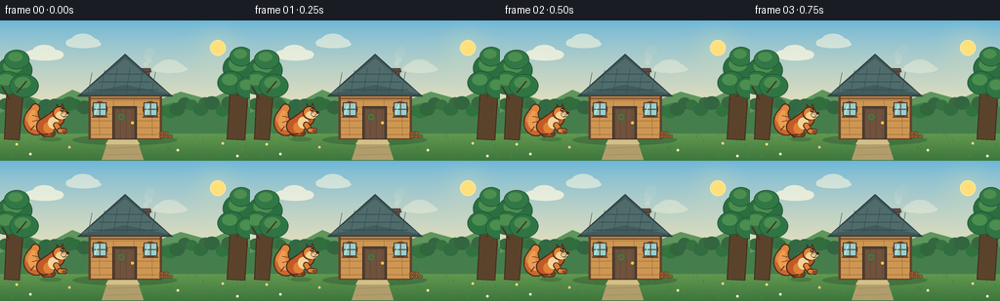
展开代码变化
--- 上一保存版本
+++ 本次保存版本
@@ -279,9 +279,9 @@
path = {
7: (65, 91, -35, "launch", [(-7, 3), (-17, 8), (-24, 2), (-20, -9)]),
8: (84, 49, -24, "rise", [(-7, 2), (-18, 7), (-25, -1), (-22, -13)]),
- 9: (107, 27, -12, "float", [(-7, 1), (-18, 5), (-25, -4), (-21, -16)]),
- 10: (130, 18, 0, "float", [(-7, 0), (-18, 3), (-24, -7), (-18, -18)]),
- 11: (153, 27, 11, "float", [(-7, 1), (-18, 6), (-23, -2), (-16, -14)]),
+ 9: (107, 27, -12, "float", [(-7, 1), (-18, 5), (-28, 6), (-33, -1)]),
+ 10: (130, 25, 0, "float", [(-7, 0), (-19, 2), (-30, 2), (-35, -6)]),
+ 11: (153, 28, 11, "float", [(-7, 1), (-18, 6), (-27, 7), (-32, 0)]),
12: (175, 49, 21, "descend", [(-7, 3), (-17, 9), (-21, 1), (-14, -10)]),
13: (194, 82, 29, "descend", [(-7, 4), (-16, 11), (-19, 4), (-12, -6)]),
14: (204, 107, 10, "land", [(-7, 4), (-18, 9), (-23, 1), (-14, -9)]),
@@ -310,25 +310,25 @@
}
-def draw_tail(draw, cx, cy, angle, controls, pose):
+def draw_tail(draw, cx, cy, angle, controls, size):
def world(local):
- x, y = rotate_point(local, angle)
+ x, y = rotate_point((local[0] * size, local[1] * size), angle)
return cx + x, cy + y
points = [world(cubic_bezier(controls, i / 30)) for i in range(31)]
for i, (x, y) in enumerate(points):
t = i / 30
- radius = 4.4 + 4.2 * math.sin(math.pi * min(1.0, t * 1.08)) - 0.7 * t
+ radius = (4.4 + 4.2 * math.sin(math.pi * min(1.0, t * 1.08)) - 0.7 * t) * size
ellipse(draw, (x - radius - 1.2, y - radius - 1.2, x + radius + 1.2, y + radius + 1.2), (78, 45, 31))
for i, (x, y) in enumerate(points):
t = i / 30
- radius = 4.4 + 4.2 * math.sin(math.pi * min(1.0, t * 1.08)) - 0.7 * t
+ radius = (4.4 + 4.2 * math.sin(math.pi * min(1.0, t * 1.08)) - 0.7 * t) * size
fill = (202, 103, 46) if t < 0.72 else (224, 135, 61)
ellipse(draw, (x - radius, y - radius, x + radius, y + radius), fill)
for i in range(3, 28, 2):
x, y = points[i]
t = i / 30
- radius = (4.4 + 4.2 * math.sin(math.pi * min(1.0, t * 1.08)) - 0.7 * t) * 0.55
+ radius = (4.4 + 4.2 * math.sin(math.pi * min(1.0, t * 1.08)) - 0.7 * t) * 0.55 * size
ellipse(draw, (x - radius, y - radius * 0.75, x + radius, y + radius * 0.75), (236, 157, 82))
# A few dark fur tufts keep the silhouette bushy and readable.
@@ -339,7 +339,7 @@
dx, dy = nx - px, ny - py
mag = max(0.1, math.hypot(dx, dy))
side = -1 if i < 15 else 1
- ox, oy = -dy / mag * 6.2 * side, dx / mag * 6.2 * side
+ ox, oy = -dy / mag * 6.2 * side * size, dx / mag * 6.2 * side * size
line(draw, [(x, y), (x + ox, y + oy)], (78, 45, 31), 0.75)
@@ -347,10 +347,11 @@
pose = squirrel_pose(frame)
cx, cy, angle = pose["cx"], pose["cy"], pose["angle"]
state = pose["pose"]
+ size = 1.55
# Soft ground shadow.
ground_gap = max(0.0, 119.0 - (cy + 14.0))
- shadow_width = 22.0 - min(11.0, ground_gap * 0.12)
+ shadow_width = (22.0 - min(11.0, ground_gap * 0.12)) * 1.15
shadow_alpha = round(74 * pose["shadow"])
layer = Image.new("RGBA", image.size, (0, 0, 0, 0))
ld = ImageDraw.Draw(layer)
@@ -359,10 +360,10 @@
draw = ImageDraw.Draw(image)
def world(local):
- x, y = rotate_point(local, angle)
+ x, y = rotate_point((local[0] * size, local[1] * size), angle)
return cx + x, cy + y
- draw_tail(draw, cx, cy, angle, pose["tail"], state)
+ draw_tail(draw, cx, cy, angle, pose["tail"], size)
outline = (76, 43, 29)
orange = (193, 91, 39)
@@ -389,21 +390,22 @@
front_a, front_b, front_c = world((5, 4)), world((9, 10)), world((14, 12))
# Back limbs, torso, then front limbs.
- capsule(draw, hind_a, hind_b, orange, 5.1, outline, 1.0)
- capsule(draw, hind_b, hind_c, orange, 4.5, outline, 1.0)
- ellipse(draw, (hind_c[0] - 2.8, hind_c[1] - 1.5, hind_c[0] + 2.8, hind_c[1] + 1.8), (112, 64, 36))
+ capsule(draw, hind_a, hind_b, orange, 5.1 * size, outline, 1.0)
+ capsule(draw, hind_b, hind_c, orange, 4.5 * size, outline, 1.0)
+ ellipse(draw, (hind_c[0] - 2.8 * size, hind_c[1] - 1.5 * size, hind_c[0] + 2.8 * size, hind_c[1] + 1.8 * size), (112, 64, 36))
body_a, body_b = world((-7, 4)), world((6, -3))
- capsule(draw, body_a, body_b, orange, 15.0, outline, 1.25)
- ellipse(draw, (world((-3, 5))[0] - 5.5, world((-3, 5))[1] - 5.0, world((-3, 5))[0] + 5.5, world((-3, 5))[1] + 6.5), orange_light)
+ capsule(draw, body_a, body_b, orange, 15.0 * size, outline, 1.25)
+ haunch_x, haunch_y = world((-3, 5))
+ ellipse(draw, (haunch_x - 5.5 * size, haunch_y - 5.0 * size, haunch_x + 5.5 * size, haunch_y + 6.5 * size), orange_light)
# Belly patch, positioned on the camera-facing side.
bx, by = world((2, 1))
- ellipse(draw, (bx - 5.2, by - 5.7, bx + 5.7, by + 6.3), cream)
-
- capsule(draw, front_a, front_b, orange_light, 4.5, outline, 0.9)
- capsule(draw, front_b, front_c, orange_light, 3.9, outline, 0.9)
- ellipse(draw, (front_c[0] - 2.7, front_c[1] - 1.2, front_c[0] + 2.7, front_c[1] + 1.7), (139, 75, 40))
+ ellipse(draw, (bx - 5.2 * size, by - 5.7 * size, bx + 5.7 * size, by + 6.3 * size), cream)
+
+ capsule(draw, front_a, front_b, orange_light, 4.5 * size, outline, 0.9)
+ capsule(draw, front_b, front_c, orange_light, 3.9 * size, outline, 0.9)
+ ellipse(draw, (front_c[0] - 2.7 * size, front_c[1] - 1.2 * size, front_c[0] + 2.7 * size, front_c[1] + 1.7 * size), (139, 75, 40))
# Head and ears.
head_x, head_y = world((10, -8))
@@ -411,18 +413,18 @@
ear_front = [world((12, -13)), world((14, -18)), world((16, -11))]
polygon(draw, ear_back, orange, outline, 1.0)
polygon(draw, ear_front, orange_light, outline, 1.0)
- ellipse(draw, (head_x - 7.1, head_y - 6.8, head_x + 7.1, head_y + 7.0), orange_light, outline, 1.2)
- ellipse(draw, (head_x - 4.0, head_y - 1.6, head_x + 7.3, head_y + 6.3), cream)
+ ellipse(draw, (head_x - 7.1 * size, head_y - 6.8 * size, head_x + 7.1 * size, head_y + 7.0 * size), orange_light, outline, 1.2)
+ ellipse(draw, (head_x - 4.0 * size, head_y - 1.6 * size, head_x + 7.3 * size, head_y + 6.3 * size), cream)
muzzle_x, muzzle_y = world((15, -6))
- ellipse(draw, (muzzle_x - 4.0, muzzle_y - 2.7, muzzle_x + 4.2, muzzle_y + 2.8), cream, outline, 0.55)
+ ellipse(draw, (muzzle_x - 4.0 * size, muzzle_y - 2.7 * size, muzzle_x + 4.2 * size, muzzle_y + 2.8 * size), cream, outline, 0.55)
nose_x, nose_y = world((18.2, -7.3))
- ellipse(draw, (nose_x - 1.6, nose_y - 1.35, nose_x + 1.6, nose_y + 1.35), (55, 38, 29))
+ ellipse(draw, (nose_x - 1.6 * size, nose_y - 1.35 * size, nose_x + 1.6 * size, nose_y + 1.35 * size), (55, 38, 29))
eye_x, eye_y = world((12.8, -10.6))
- ellipse(draw, (eye_x - 1.6, eye_y - 1.8, eye_x + 1.6, eye_y + 1.6), (43, 32, 26))
- ellipse(draw, (eye_x - 0.65, eye_y - 0.8, eye_x + 0.35, eye_y + 0.2), (255, 249, 218))
- line(draw, [(nose_x - 0.5, nose_y + 1.1), (muzzle_x - 1.5, muzzle_y + 3.3)], outline, 0.45)
+ ellipse(draw, (eye_x - 1.6 * size, eye_y - 1.8 * size, eye_x + 1.6 * size, eye_y + 1.6 * size), (43, 32, 26))
+ ellipse(draw, (eye_x - 0.65 * size, eye_y - 0.8 * size, eye_x + 0.35 * size, eye_y + 0.2 * size), (255, 249, 218))
+ line(draw, [(nose_x - 0.5 * size, nose_y + 1.1 * size), (muzzle_x - 1.5 * size, muzzle_y + 3.3 * size)], outline, 0.45)
for dy in (-1.0, 0.4, 1.7):
- line(draw, [(nose_x - 1.4, nose_y + dy), (nose_x - 7.0, nose_y + dy - 1.1)], (103, 72, 49), 0.35)
+ line(draw, [(nose_x - 1.4 * size, nose_y + dy * size), (nose_x - 7.0 * size, nose_y + (dy - 1.1) * size)], (103, 72, 49), 0.35)
# Motion accents around takeoff and landing.
if frame in (6, 7):
候选 03播放与检查图
点击播放 · 原生 RGB 像素

展开代码变化
代码未变化；重新保存了产物。
候选 04播放与检查图
点击播放 · 原生 RGB 像素
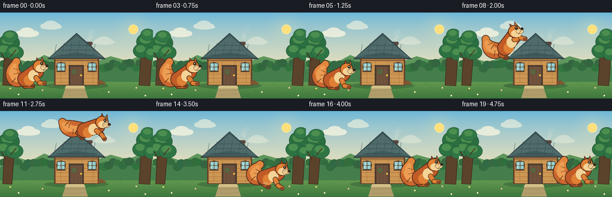
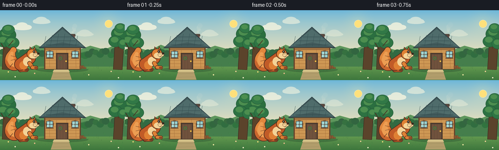
展开代码变化
--- 上一保存版本
+++ 本次保存版本
@@ -284,7 +284,7 @@
11: (153, 28, 11, "float", [(-7, 1), (-18, 6), (-27, 7), (-32, 0)]),
12: (175, 49, 21, "descend", [(-7, 3), (-17, 9), (-21, 1), (-14, -10)]),
13: (194, 82, 29, "descend", [(-7, 4), (-16, 11), (-19, 4), (-12, -6)]),
- 14: (204, 107, 10, "land", [(-7, 4), (-18, 9), (-23, 1), (-14, -9)]),
+ 14: (198, 107, 10, "land", [(-7, 4), (-18, 9), (-23, 1), (-14, -9)]),
}
if frame in path:
cx, cy, angle, pose, tail = path[frame]
@@ -301,7 +301,7 @@
bob = (0.0, -0.3, 0.2, -0.35, 0.0)[idx]
sway = math.sin(idx * 1.15 + 0.5) * 1.5
return {
- "cx": 207.0,
+ "cx": 200.0,
"cy": 104.0 + bob,
"angle": math.radians(-6),
"pose": "idle",
@@ -436,7 +436,7 @@
elif frame in (13, 14):
accent = Image.new("RGBA", image.size, (0, 0, 0, 0))
ad = ImageDraw.Draw(accent)
- for i, (x, y, r) in enumerate([(194, 121, 4.4), (203, 121, 3.8), (211, 121, 2.8)]):
+ for i, (x, y, r) in enumerate([(188, 121, 4.4), (197, 121, 3.8), (205, 121, 2.8)]):
ad.ellipse(box(x - r, y - r * 0.55, x + r, y + r * 0.55), (231, 211, 153, 72 - i * 13))
image.alpha_composite(accent)
可观测工具轨迹
实际执行的命令与返回图片。
命令 1exit 0
/bin/bash -c "pwd && rg --files -g '"'!*.mp4'"' -g '"'!*.mov'"' -g '"'!*.webm'"' | sed -n '1,200p'"
命令 2exit 0
/bin/bash -c "sed -n '1,240p' prompt.txt"
命令 3exit 0
/bin/bash -c "sed -n '1,260p' GENERATION_RULES.md"
命令 4exit 0
/bin/bash -c 'cat task_spec.json'
命令 5exit 0
/bin/bash -c "find . -maxdepth 3 -type f | sort | sed -n '1,240p'"
命令 6exit 0
/bin/bash -c "sed -n '1,260p' artifact_io.py"
命令 7exit 0
/bin/bash -c "sed -n '1,240p' player_template.html"
命令 8exit 0
/bin/bash -c "python - <<'PY'
from PIL import Image
print('Pillow OK', Image.__version__)
import numpy as np
print('numpy OK', np.__version__)
PY"命令 9exit 1
/bin/bash -c 'python generate.py'
命令 10exit 0
/bin/bash -c 'python generate.py'
命令 11exit 0
/bin/bash -c "mkdir -p candidate_01 && cp task_spec.json prompt.txt candidate_01/ && python - <<'PY'
import numpy as np
import artifact_io
import generate
frames = np.stack([generate.render_frame(i) for i in range(generate.FRAMES)])
artifact_io.save(frames, 'candidate_01')
print('saved candidate_01', frames.shape)
PY"命令 12exit 0
/bin/bash -c "rg -n \"squirrel_pose|draw_squirrel|SCALE|cx|cy|radius|width\" generate.py | sed -n '1,220p'"
命令 13exit 0
/bin/bash -c 'python generate.py'
命令 14exit 0
/bin/bash -c 'python generate.py'
命令 15exit 1
/bin/bash -c "python -m py_compile generate.py && python - <<'PY'
import json
from pathlib import Path
import numpy as np
from PIL import Image
p=Path('.')
spec=json.loads((p/'task_spec.json').read_text())
z=np.load(p/'pixels.npz')['pixels']
frames=sorted((p/'frames').glob('*.png'))
assert z.shape == (20,144,256), z.shape
assert z.dtype == np.uint32, z.dtype
assert len(frames)==20
for f in frames:
im=Image.open(f)
assert im.size==(256,144), (f, im.size)
assert im.mode=='RGB', (f, im.mode)
assert (p/'index.html').is_file()
assert (p/'inspection.png').is_file()
print('spec', spec)
print('packed tensor', z.shape, z.dtype, 'unique frames', len({z[i].tobytes() for i in range(20)}))
print('frame pngs', len(frames), 'all 256x144 RGB')
print('artifact sizes', {n:(p/n).stat().st_size for n in ('pixels.npz','index.html','inspection.png','transition_check.png')})
PY"命令 16exit 1
/bin/bash -c "python -m py_compile generate.py && python - <<'PY'
import json
from pathlib import Path
import numpy as np
from PIL import Image
p=Path('.')
spec=json.loads((p/'task_spec.json').read_text())
z=np.load(p/'pixels.npz')['pixels']
frames=sorted((p/'frames').glob('*.png'))
assert z.shape == (144,256,20), z.shape
assert z.dtype == np.uint32, z.dtype
assert len(frames)==20
for f in frames:
im=Image.open(f)
assert im.size==(256,144), (f, im.size)
assert im.mode=='RGB', (f, im.mode)
assert (p/'index.html').is_file()
assert (p/'inspection.png').is_file()
# Locate orange squirrel pixels in each decoded RGB frame. Exclude the warm path/sun by restricting y.
centers=[]
for f in frames:
rgb=np.asarray(Image.open(f).convert('RGB')).astype(np.int16)
r,g,b=rgb[:,:,0],rgb[:,:,1],rgb[:,:,2]
mask=(r>125)&(r>g*1.28)&(g>b*1.25)&(np.indices(r.shape)[0]>12)
ys,xs=np.where(mask)
assert len(xs)>20, (f,len(xs))
centers.append((float(xs.mean()), float(ys.mean()), len(xs)))
assert centers[0][0] < 90, centers[0]
assert centers[-1][0] > 160, centers[-1]
assert min(c[1] for c in centers) < 60, min(c[1] for c in centers)
print('spec:', spec)
print('packed tensor:', z.shape, z.dtype, 'unique frames:', len({z[:,:,i].tobytes() for i in range(20)}))
print('frame PNGs:', len(frames), 'all 256x144 RGB')
print('orange center x: first %.1f, apex %.1f, final %.1f' % (centers[0][0], centers[10][0], centers[-1][0]))
print('artifact sizes:', {n:(p/n).stat().st_size for n in ('pixels.npz','index.html','inspection.png','transition_check.png')})
PY"命令 17exit 0
/bin/bash -c "python - <<'PY'
from pathlib import Path
import numpy as np
from PIL import Image
for f in sorted(Path('frames').glob('*.png')):
rgb=np.asarray(Image.open(f).convert('RGB')).astype(np.int16)
r,g,b=rgb[:,:,0],rgb[:,:,1],rgb[:,:,2]
mask=(r>125)&(r>g*1.28)&(g>b*1.25)&(np.indices(r.shape)[0]>12)
ys,xs=np.where(mask)
print(f.name, len(xs), round(float(xs.mean()),1), round(float(ys.mean()),1), int(xs.min()), int(xs.max()), int(ys.min()), int(ys.max()))
PY"命令 18exit 1
/bin/bash -c "python - <<'PY'
import json
from pathlib import Path
import numpy as np
from PIL import Image
p=Path('.')
spec=json.loads((p/'task_spec.json').read_text())
z=np.load(p/'pixels.npz')['pixels']
frames=sorted((p/'frames').glob('*.png'))
assert z.shape == (144,256,20), z.shape
assert z.dtype == np.uint32, z.dtype
assert len(frames)==20
for f in frames:
im=Image.open(f)
assert im.size==(256,144), (f, im.size)
assert im.mode=='RGB', (f, im.mode)
assert (p/'index.html').is_file()
assert (p/'inspection.png').is_file()
centers=[]
for f in frames:
rgb=np.asarray(Image.open(f).convert('RGB')).astype(np.int16)
r,g,b=rgb[:,:,0],rgb[:,:,1],rgb[:,:,2]
mask=(r>125)&(r>g*1.28)&(g>b*1.25)&(np.indices(r.shape)[0]>12)
# Search side regions only; the hut sits between x=78 and x=178.
side=np.zeros_like(mask); side[:, :78]=True; side[:, 178:]=True
ys,xs=np.where(mask & side)
assert len(xs)>100, (f,len(xs))
centers.append((float(xs.mean()), float(ys.mean()), len(xs)))
assert centers[0][0] < 75, centers[0]
assert centers[-1][0] > 190, centers[-1]
print('spec:', spec)
print('packed tensor:', z.shape, z.dtype, 'unique frames:', len({z[:,:,i].tobytes() for i in range(20)}))
print('frame PNGs:', len(frames), 'all 256x144 RGB')
print('side silhouette center x: first %.1f, airborne %.1f, final %.1f' % (centers[0][0], centers[10][0], centers[-1][0]))
print('artifact sizes:', {n:(p/n).stat().st_size for n in ('pixels.npz','index.html','inspection.png','transition_check.png')})
PY"命令 19exit 0
/bin/bash -c "python - <<'PY'
from pathlib import Path
import numpy as np
from PIL import Image
for f in sorted(Path('frames').glob('*.png')):
rgb=np.asarray(Image.open(f).convert('RGB')).astype(np.int16)
r,g,b=rgb[:,:,0],rgb[:,:,1],rgb[:,:,2]
mask=(r>125)&(r>g*1.28)&(g>b*1.25)&(np.indices(r.shape)[0]>12)
side=np.zeros_like(mask); side[:, :78]=True; side[:, 178:]=True
ys,xs=np.where(mask & side)
print(f.name, len(xs), (int(xs.min()),int(xs.max()),int(ys.min()),int(ys.max())) if len(xs) else None)
PY"命令 20exit 0
/bin/bash -c "python - <<'PY'
from pathlib import Path
import numpy as np
from PIL import Image
for f in sorted(Path('frames').glob('*.png')):
rgb=np.asarray(Image.open(f).convert('RGB')).astype(np.int16)
r,g,b=rgb[:,:,0],rgb[:,:,1],rgb[:,:,2]
mask=(r>125)&(r>g*1.28)&(g>b*1.25)&(np.indices(r.shape)[0]>12)
for lo,hi,label in [(0,78,'left'),(178,256,'right')]:
ys,xs=np.where(mask[:,lo:hi]); xs=xs+lo
print(f.name, label, len(xs), round(float(xs.mean()),1) if len(xs) else None)
PY"命令 21exit 1
/bin/bash -c "python - <<'PY'
import json
from pathlib import Path
import numpy as np
from PIL import Image
p=Path('.')
spec=json.loads((p/'task_spec.json').read_text())
z=np.load(p/'pixels.npz')['pixels']
frames=sorted((p/'frames').glob('*.png'))
assert z.shape == (144,256,20) and z.dtype == np.uint32
assert len(frames)==20
for f in frames:
im=Image.open(f)
assert im.size==(256,144) and im.mode=='RGB'
assert (p/'index.html').is_file() and (p/'inspection.png').is_file()
# Validate player payload reconstructs the same 20 frames.
html=(p/'index.html').read_text()
payload=html.split('const DATA=',1)[1].split(',W=DATA.width',1)[0]
data=json.loads(payload)
import base64
first=np.frombuffer(base64.b64decode(data['first']),dtype='<u4').reshape(144,256)
assert np.array_equal(first,z[:,:,0])
for i,d in enumerate(data['deltas'],start=1):
prev=np.frombuffer(base64.b64decode(data['first'] if i==1 else data['deltas'][i-2]),dtype='<u4').copy()
# Verify PNG sequence against packed source.
for i,f in enumerate(frames):
rgb=np.asarray(Image.open(f).convert('RGB')).astype(np.uint32)
packed=(rgb[:,:,0]<<16)|(rgb[:,:,1]<<8)|rgb[:,:,2]
assert np.array_equal(packed,z[:,:,i]), f
print('PASS: 20 RGB frames, 256x144, packed tensor (144,256,20)')
print('PASS: all PNG frames match packed pixels')
print('PASS: player contains',len(data['deltas']),'deltas and',len(base64.b64decode(data['first'])),'bytes in first frame')
print('PASS: duration',20/4.0,'seconds at',4.0,'fps')
PY
python generate.py >/tmp/pixelworld_generate_final.log && cat /tmp/pixelworld_generate_final.log"命令 22exit 0
/bin/bash -c 'python generate.py'
命令 23exit 0
/bin/bash -c "python - <<'PY'
import json, base64
from pathlib import Path
import numpy as np
from PIL import Image
p=Path('.')
z=np.load(p/'pixels.npz')['pixels']
frames=sorted((p/'frames').glob('*.png'))
assert z.shape==(144,256,20) and z.dtype==np.uint32 and len(frames)==20
for i,f in enumerate(frames):
im=Image.open(f); assert im.size==(256,144) and im.mode=='RGB'
rgb=np.asarray(im).astype(np.uint32)
assert np.array_equal((rgb[:,:,0]<<16)|(rgb[:,:,1]<<8)|rgb[:,:,2], z[:,:,i])
html=(p/'index.html').read_text(); data=json.loads(html.split('const DATA=',1)[1].split(',W=DATA.width',1)[0])
assert len(data['deltas'])==19
assert len(base64.b64decode(data['first']))==256*144*4
print('final verification passed')
print('outputs:', ', '.join(n for n in ('pixels.npz','index.html','inspection.png','transition_check.png','generate.py') if (p/n).exists()))
PY"命令 24exit 0
/bin/bash -c 'du -h pixels.npz index.html inspection.png transition_check.png && git status --short 2>/dev/null || true'
视觉工具实际返回图片 1

视觉工具实际返回图片 2
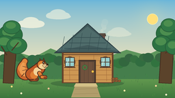
视觉工具实际返回图片 3
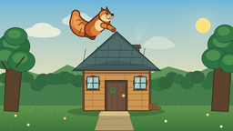
视觉工具实际返回图片 4
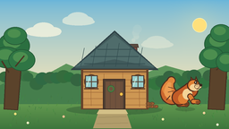
视觉工具实际返回图片 5
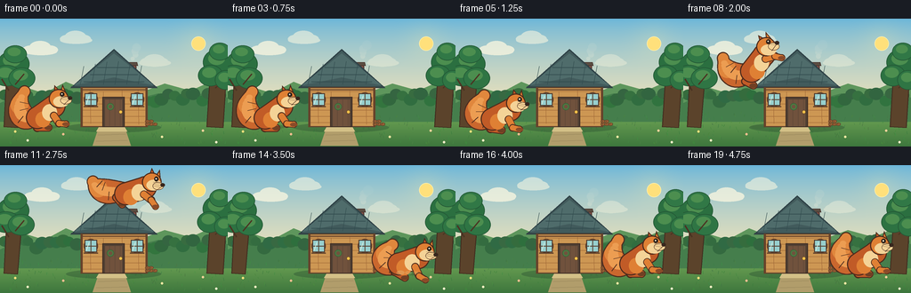
视觉工具实际返回图片 6
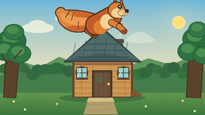
视觉工具实际返回图片 7
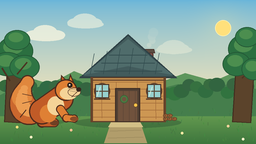
视觉工具实际返回图片 8
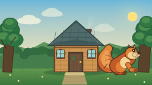
视觉工具实际返回图片 9
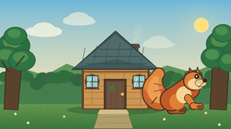
保存候选 4 份；完成命令 24 次；可验证图片返回 9 张。原始 API 响应与完整日志保留在本地。